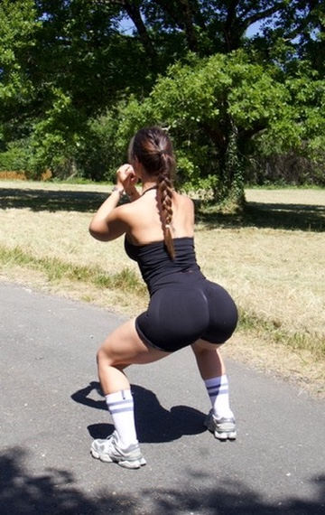

Ornella Fit Coaching
Offert rien que pour toi 🍑
4 exercices, dans le bon ordre, pour sentir tes fessiers travailler dès la première séance. Sans matériel, sans salle.

La plupart des femmes font des exercices au hasard et sentent surtout les cuisses. Ici, on attaque le fessier sous tous les angles, dans un ordre pensé pour qu'il travaille vraiment :
Comment : allongée sur le dos, pieds à plat près des fessiers. Monte le bassin en poussant dans les talons, redescends lentement sans poser les fesses à fond.
🔑 Le détail qui change tout : serre le fessier 2 secondes en haut de chaque montée.
⚠️ Erreur à éviter : cambrer le bas du dos pour monter plus haut. C'est le fessier qui pousse, pas les reins.
Comment : debout, recule une jambe loin derrière et fléchis les deux genoux. Pousse dans le talon avant pour remonter. Le buste légèrement penché pour cibler le fessier.
🔑 Le détail : le genou avant reste au-dessus de la cheville, jamais en avant.
⚠️ Erreur à éviter : se pencher trop en arrière ou faire un pas trop court — tu sentirais surtout la cuisse.
Comment : position du hip thrust, mais une jambe tendue vers le haut. Monte le bassin avec la jambe au sol uniquement, en gardant le bassin bien droit.
🔑 Le détail : ne laisse pas une hanche s'affaisser — les deux restent à la même hauteur.
⚠️ Erreur à éviter : aller trop vite. Plus dur qu'il n'y paraît : tu sentiras vite le côté qui travaille !
Comment : à quatre pattes, pousse un talon vers le plafond, jambe fléchie à 90°. Monte depuis le fessier, puis redescends sans poser le genou.
🔑 Le détail : pousse avec le talon vers le haut, comme pour laisser une empreinte au plafond.
⚠️ Erreur à éviter : creuser le bas du dos. Le dos reste plat, seul le fessier monte la jambe.
Chaque semaine, rends ça un peu plus dur : ajoute 2 répétitions par exercice, ou une 3ᵉ fois dans ton tour. C'est cette petite progression, semaine après semaine, qui transforme vraiment — pas l'intensité d'une seule séance.
🤍 Post-partum ou périnée fragile ? Commence doucement et valide avec ta sage-femme ou ton kiné avant d'intensifier. On ne brûle pas les étapes.
Cette routine, c'est le premier pas. Booty Sculpt, c'est 8 semaines guidées en vidéo, avec la progression complète semaine après semaine — pour des fessiers que tu reconnais dans le miroir.
Découvrir Booty Sculpt — 19€ →Ornella · Coach sportive diplômée d'État 💪